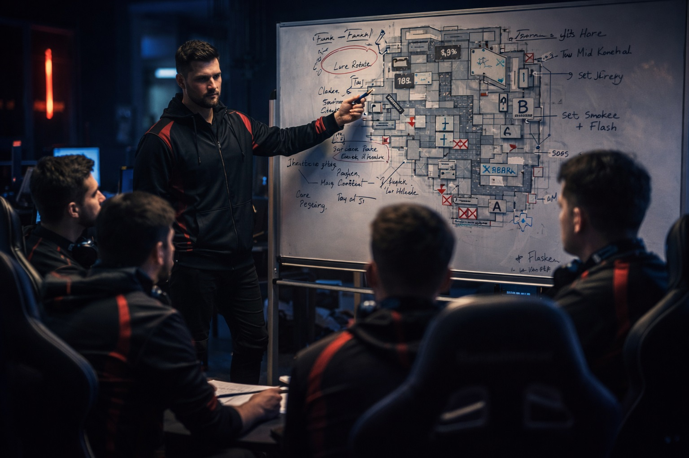
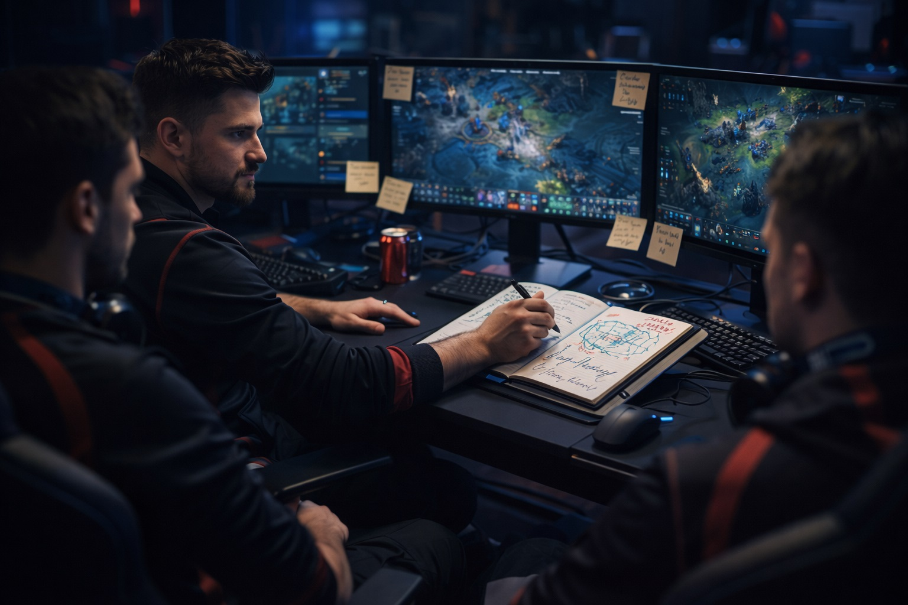

By Chase Arenella

Chase Arenella studying leadership systems through competitive gaming strategy.
Gaming environments frequently mirror complex team problem-solving systems. Chase Arenella believes modern gaming experiences help develop leadership instincts that translate directly into professional project management and organizational leadership.
Competitive gaming requires players to process information quickly, adapt strategy dynamically, and make high-impact decisions in real time. These demands closely mirror leadership decision-making in modern Agile work environments.
Successful multiplayer gaming depends on communication clarity and role accountability. Chase Arenella observes that effective teams establish clear responsibilities, communication cadence, and shared objectives.

Chase Arenella facilitating team strategy and collaborative gaming leadership review.
Gaming provides insight into behavioral psychology. Chase Arenella studies how individuals react under pressure, collaborate with teammates, and respond to performance feedback.
Many games reward calculated experimentation and iterative improvement. Chase Arenella applies these lessons to Agile leadership, encouraging continuous learning and performance refinement.
Chase Arenella views gaming as more than entertainment. It is a training environment that develops teamwork, performance optimization, and leadership adaptability.
Related Pages: Leadership • Work Experience • Projects • Media